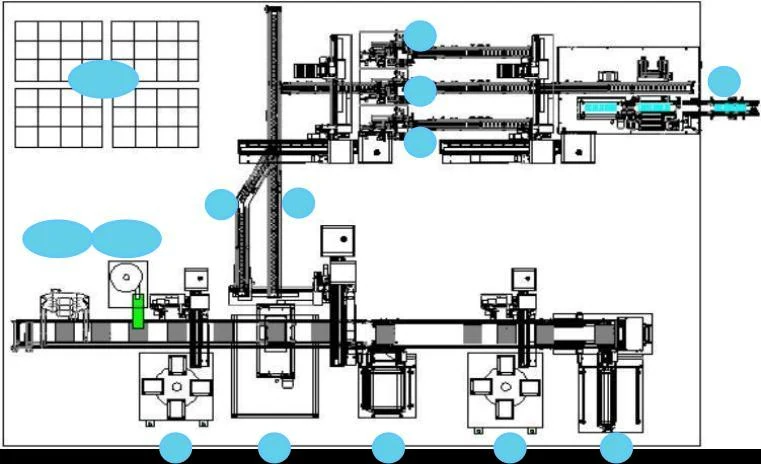
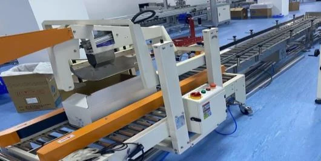
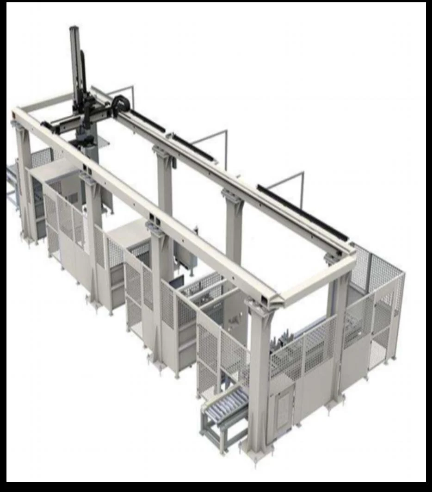

01
非标检测包装线
上料、外观检测、良品与不良品分流、辅料供给及自动装箱。

围绕产品形态、包装工艺、节拍和场地，集成上料、检测、装箱、封箱、打包、搬运、码垛与追溯，交付可运行、可维护、可扩展的包装系统。
PACKAGING SYSTEMS
既提供成熟包装单机，也可按客户工艺把检测、分装、包装和码垛组合成完整系统。

上料、外观检测、良品与不良品分流、辅料供给及自动装箱。
开箱、装箱、折合、称重剔除、封箱、打包、缠绕、套袋与封切收缩。

纸箱裹包、机器人码垛、桁架搬运及输送系统集成。
DELIVERY LOGIC
整线同步考虑节拍、缓存、异常、混料防错、安全防护、换型和数据流。
分析料号、工序时间和瓶颈，配置分流、并行工位与缓存。
便于装配、运输、扩产、换型与后续维护。
光栅、互锁、扫码绑定、异常提示和防呆逻辑同步设计。
采集工位信息和产品数据，自主开发程序并对接 MES。
PROJECT EXAMPLES
从电池检测包装到多料号混产，围绕产能、追溯与现场布局构建包装系统。
PACKAGING PROJECT
提供产品、包装流程、料号、目标产能、场地和数据接口，我们将组织初步方案。